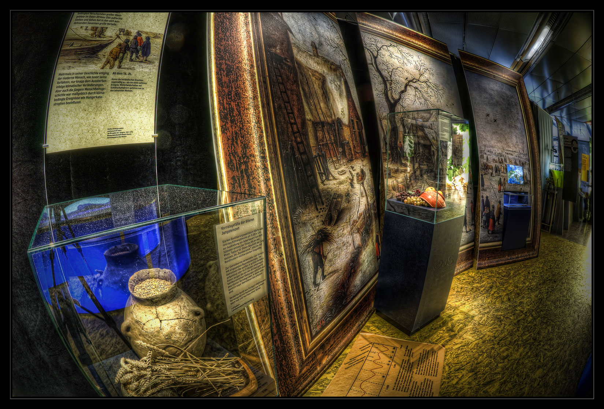
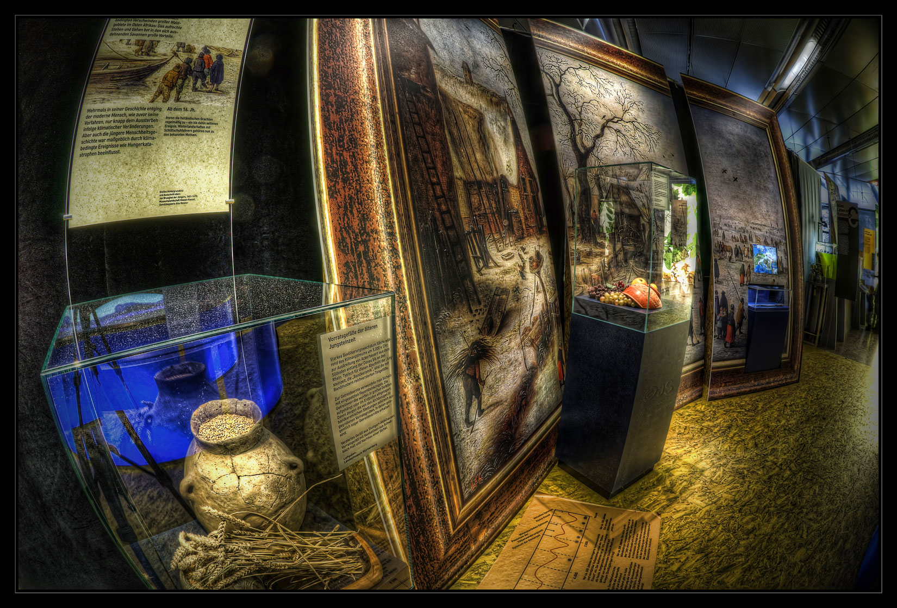

#immagine 360 sfondo
#scritta mare
#scatoletta azzurra
#oculus e laser
#musichetta
 
#definendo prima l'immage di sfondo impostiamo il programma in modo che, interagendo con il quadrato, si passi ad un'altra immagine.
#impostiamo il bottone di interazione nello stesso luogo del quarato azzurro. grazie alla funzione text dovrebbe uscire la scritta trip to China.
#chiedere, penso sia per il puntatore nero.

#definendo prima l'immage di sfondo impostiamo il programma in modo che, interagendo con il quadrato, si passi ad un'altra immagine.
#impostiamo il bottone di interazione nello stesso luogo del quarato azzurro. grazie alla funzione text dovrebbe uscire la scritta trip to China.
#chiedere, penso sia per il puntatore nero.